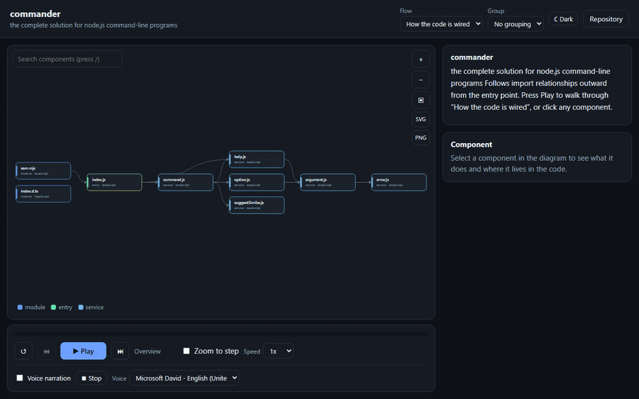

Compare two revisions
See what changed between two tags or branches: added, removed and changed components, with a narrated tour of the difference.
Open source · no sign-up · runs in your browser
Paste a link and get an animated, narrated architecture tour in seconds. Every box and arrow links to real code, so nothing is made up.

or paste a token below
The token is only ever sent to api.github.com from your browser. Nothing is uploaded to any other server. Use a
fine-grained token
with read-only Contents access.
Real tours, one click
Each one is generated live in your browser from the code on GitHub. Nothing here is a mock-up.
Or compare two versions: highlights what was added, removed and changed.
What you get
See what changed between two tags or branches: added, removed and changed components, with a narrated tour of the difference.
Follow a fetch call from the frontend to the server route that handles it. Linked only on an exact method and path match.
One component per workspace package, or open a single folder such as owner/repo:apps/web.
Find components with /, group into swimlanes, and export SVG, PNG, Mermaid or PlantUML.
Captions and your browser’s own voice, with playback controls and a shareable link to any step.
Analysis runs in your browser and the tour plays in a sandboxed frame. Nothing is uploaded, and no keys are needed.
Your browser fetches the file tree and source files straight from GitHub. No server of ours ever sees them.
It resolves real imports, entry points and dependencies, then checks every claim against the actual files.
Watch the flow light up step by step with captions and voice narration, and click any part to see its code.
If the repo already publishes its own tour (docs/architecture/), you get that one, curated by its authors.
The website gives you an automatic picture. Add the skill or the action to publish a curated tour with narration written from your actual code.
Ask Claude Code to “generate an interactive architecture for this project.” It reads your code, writes the narration, and validates every claim.
git clone https://github.com/Kaushik2210/gitVisualise gitvisualise
node gitvisualise/skills/repo-architecture/scripts/gitvisualise.mjs install-skillOne command, zero dependencies, Node 18+. Works on local folders and GitHub URLs.
node gitvisualise/skills/repo-architecture/scripts/gitvisualise.mjs all .Regenerate on every push and publish to GitHub Pages. Curated edits are preserved.
- uses: actions/checkout@v4
- uses: Kaushik2210/gitVisualise@main
with:
out: docs/architecturegitvisualise is open source and young. There is a public roadmap, and every task is a scoped issue with pointers to the exact files. Pick one, or tell us which repo it draws badly.
Find a good first issue Read the roadmap Join the discussion